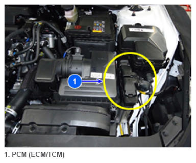

Pcm (ECM/TCM): Immobilizer Lock
 Courtesy of HYUNDAI MOTOR AMERICA
|
The Immobilizer can lock itself (Lock Mode) when all conditions are met. In the Lock Mode, a driver cannot start the engine for 1 hour. Also, DTCs cannot be cleared by GDS.